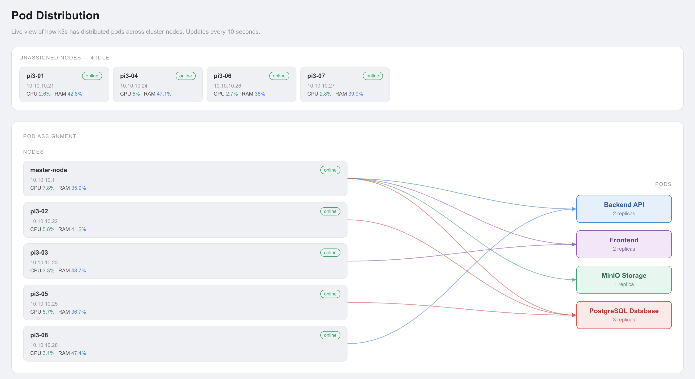
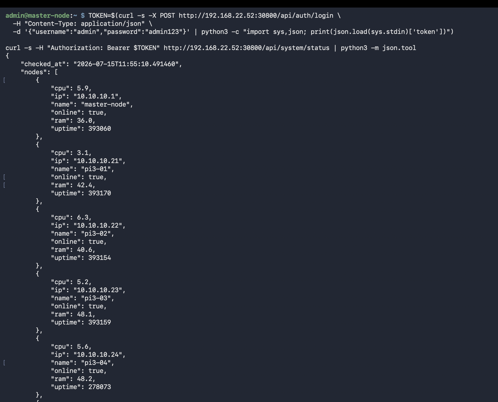

Flask REST API deployed as 2 highly-available k3s replicas — handling authentication, alert storage, benchmark data, MinIO snapshots, and real-time cluster status.
The backend is the central nervous system of EdgeGuard. Every piece of data that flows through the system — camera alerts, benchmark results, user authentication, cluster status — passes through the Flask REST API. The React frontend talks exclusively to the backend; it never accesses the database or MinIO directly.
The backend is deployed as 2 replicas in k3s with pod anti-affinity rules ensuring they run on different Pi3 nodes. If one node crashes or a pod fails, the other replica continues serving requests while k3s automatically reschedules the failed pod on a healthy node. This gives genuine high availability — not just redundancy on paper.
Flask was chosen for its simplicity and minimal overhead. Django brings too much built-in structure for a focused API server. FastAPI is excellent but adds async complexity. Flask gives full control with minimal boilerplate — ideal for a student project where every team member needs to understand and modify the code.
The backend started with SQLite — a simple file-based database that requires no server setup. It worked well in early development but hit two critical limitations when deployed in k3s:
SQLite uses file-level locking. When 2 Flask replicas try to write simultaneously (e.g. two alerts arriving at the same time), one write blocks or fails with "database is locked". In a high-availability setup with multiple replicas, this is unacceptable.
SQLite stores data in a single file (e.g. edgeguard.db). In k3s,
each pod gets its own filesystem — the two Flask replicas would each have their
own separate database file with different data. Requests hitting replica 1 would
not see data written by replica 2. The databases would diverge immediately.
PostgreSQL runs as a 3-replica StatefulSet in k3s with a shared persistent volume. Both Flask replicas connect to the same PostgreSQL service endpoint. PostgreSQL handles concurrent writes with proper locking, transactions, and replication. All data is consistent regardless of which Flask replica handles the request.
# Check PostgreSQL pods kubectl get pods -A | grep postgres # Check PostgreSQL service kubectl get svc -A | grep postgres # Connect to PostgreSQL directly kubectl exec -it <postgres-pod-name> -- psql -U edgeguard -d edgeguard # List all tables \dt # Count alerts SELECT COUNT(*) FROM alerts;
All endpoints return JSON. Protected endpoints require a JWT token in the header: Authorization: Bearer <token>
| Endpoint | Method | Description | Auth |
|---|---|---|---|
| /api/login | POST | Login with username + password. Returns JWT token valid for 24 hours. | No |
| /api/users | GET | List all users. Admin only. | JWT required |
| /api/users | POST | Create new user with username, password, role. | JWT required |
| /api/users/<id> | DELETE | Delete a user by ID. | JWT required |
| Endpoint | Method | Description | Auth |
|---|---|---|---|
| /api/alerts | GET | List all alerts paginated. Supports ?page=<n>&limit=<n> query params. Returns alerts with image URLs from MinIO. | JWT required |
| /api/alerts | POST | Create new alert. Called by inference service when face_covered detected. Saves snapshot to MinIO, stores record in PostgreSQL, triggers Telegram notification. | JWT required |
| /api/alerts/<id> | GET | Get single alert by ID with full details and presigned MinIO image URL. | JWT required |
| /api/alerts/<id> | DELETE | Delete alert and its associated MinIO snapshot. | JWT required |
| Endpoint | Method | Description | Auth |
|---|---|---|---|
| /api/system/status | GET | Returns real-time per-node CPU, RAM, uptime, and online status. Queries Prometheus HTTP API internally. Powers the node health grid in the frontend. | JWT required |
| /api/stream | GET | Proxies the ZMQ video stream from Pi4 to frontend as MJPEG HTTP stream. Frontend displays this in the Live Camera page. | JWT required |
| Endpoint | Method | Description | Auth |
|---|---|---|---|
| /api/benchmarks | GET | Returns all benchmark results (Monte Carlo Pi, Matrix Multiply, HPL, Task Distributor). Frontend Results page reads from this endpoint to render charts. | JWT required |
| /api/benchmarks | POST | Store new benchmark result. Called after each benchmark run to persist results to PostgreSQL. | JWT required |
| /api/povray-renders | GET | Lists Task Distributor image chunk files stored in MinIO per node count. Frontend displays individual rendered row-bands to visualize parallelism. | JWT required |
# Step 1: Login to get JWT token TOKEN=$(curl -s -X POST http://10.10.10.1:30800/api/login \ -H "Content-Type: application/json" \ -d '{"username":"admin","password":"your_password"}' \ | python3 -c "import sys,json; print(json.load(sys.stdin)['token'])") # Step 2: Use token to call protected endpoint curl -H "Authorization: Bearer $TOKEN" \ http://10.10.10.1:30800/api/system/status | python3 -m json.tool # Step 3: Get alerts curl -H "Authorization: Bearer $TOKEN" \ http://10.10.10.1:30800/api/alerts?page=1&limit=10 | python3 -m json.tool
MinIO is an S3-compatible object storage server running on Pi5. It stores all alert snapshot images — when the inference service detects a suspicious event, it captures a frame and uploads it to MinIO. The alert record in PostgreSQL stores the MinIO object key, not the image itself.
When the frontend requests an alert, the backend generates a presigned URL — a temporary URL (valid for 1 hour) that allows the browser to download the image directly from MinIO without needing authentication credentials. This keeps image serving fast and off the Flask process.
from minio import Minio import io minio_client = Minio( "minio-service:9000", access_key="edgeguard", secret_key="your_secret", secure=False ) # Save snapshot on alert detection def save_snapshot(frame_bytes, alert_id): object_name = f"alerts/alert_{alert_id}.jpg" minio_client.put_object( "edgeguard-snapshots", object_name, io.BytesIO(frame_bytes), length=len(frame_bytes), content_type="image/jpeg" ) return object_name # Generate presigned URL for frontend to display image def get_image_url(object_name): from datetime import timedelta url = minio_client.presigned_get_object( "edgeguard-snapshots", object_name, expires=timedelta(hours=1) ) return url # temporary URL valid for 1 hour
# Check MinIO pod kubectl get pods -A | grep minio # List all buckets using MinIO CLI (mc) mc alias set local http://10.10.10.1:9000 edgeguard your_secret mc ls local/ # Count alert snapshots mc ls local/edgeguard-snapshots/alerts/ | wc -l
Every API endpoint (except /api/login) requires a valid JWT token.
JWT (JSON Web Token) is a stateless authentication mechanism — the server does not
store session data. Instead, the token itself contains the user identity and
expiry time, signed with a secret key only the server knows.
import jwt from functools import wraps from flask import request, jsonify from datetime import datetime, timedelta SECRET_KEY = "your_secret_key" # Generate token on login def generate_token(user_id): payload = { 'user_id': user_id, 'exp': datetime.utcnow() + timedelta(hours=24) } return jwt.encode(payload, SECRET_KEY, algorithm='HS256') # Decorator to protect endpoints def token_required(f): @wraps(f) def decorated(*args, **kwargs): token = request.headers.get('Authorization', '').replace('Bearer ', '') try: data = jwt.decode(token, SECRET_KEY, algorithms=['HS256']) except: return jsonify({'error': 'Invalid or expired token'}), 401 return f(*args, **kwargs) return decorated # Usage: protect any endpoint @app.route('/api/alerts') @token_required def get_alerts(): return jsonify(alerts)
Running a single Flask pod would mean any node failure or pod crash takes down the entire EdgeGuard backend. We deployed 2 replicas with pod anti-affinity rules — Kubernetes scheduling constraints that guarantee the two pods never land on the same physical node.
spec: replicas: 2 template: spec: affinity: podAntiAffinity: requiredDuringSchedulingIgnoredDuringExecution: - labelSelector: matchExpressions: - key: app operator: In values: - edgeguard-backend topologyKey: "kubernetes.io/hostname" # ↑ This means: never put 2 backend pods on the same node
| Event | What k3s does | Impact on users |
|---|---|---|
| Pi3-03 crashes (Replica 1 down) | k3s detects pod unhealthy, reschedules Replica 1 on another available Pi3 | Zero downtime — Replica 2 continues serving |
| Both replicas crash simultaneously | k3s restarts both pods on available nodes | Brief downtime (~30s) until pods are Running again |
| PostgreSQL pod crashes | StatefulSet restarts PostgreSQL, data preserved on persistent volume | Brief DB unavailability — Flask returns 503 until DB recovers |
# Both backend pods should show Running on different nodes kubectl get pods -A -o wide | grep backend # Check backend service kubectl get svc -A | grep backend # Test backend is responding curl http://10.10.10.1:30800/api/health # View backend logs from both replicas kubectl logs -l app=edgeguard-backend --all-containers


Tested by manually stopping k3s-agent on the node running Replica 1. EdgeGuard frontend continued working without interruption — all requests were served by Replica 2 while k3s rescheduled Replica 1 on another node.
After migrating from SQLite, concurrent alert writes from the inference service and benchmark writes never conflict. PostgreSQL handles transaction isolation correctly across both Flask replicas.
Alert image URLs in the frontend expire after 1 hour. If a user keeps the Alerts page open for more than an hour, older images stop loading. A future improvement would be to regenerate presigned URLs on demand via a dedicated /api/alerts/<id>/image endpoint.
Docker alone provides containerization but no orchestration — you would manually restart crashed containers and manage networking yourself. k3s provides automatic restart, load balancing across replicas, persistent storage management, and health checks out of the box. This is what separates a student project from a production system.